소방설비기사(전기분야) (2019-03-03 기출문제)
1과목: 소방원론
1. 불활성 가스에 해당하는 것은?
- 수증기
- 일산화탄소
- 아르곤
- 아세틸렌
(정답률: 82%)

2. 이산화탄소소화약제의 임계온도로 옳은 것은?
- 24.4℃
- 31.1℃
- 56.4℃
- 78.2℃
(정답률: 76%)
3. 분말소화약제 중 A급, B급, C급 화재에 모두 사용할 수 있는 것은?
- Na2CO3
- NH4H2PO4
- KHCO3
- NaHCO3
(정답률: 90%)
4. 방화구획의 설치기준 중 스프링클러 기타 이와 유사한 자동식 소화설비를 설치한 10층 이하의 층은 몇 m2 이내마다 구획하여야 하는가?
- 1,000
- 1,500
- 2,000
- 3,000
(정답률: 52%)
5. 탄화칼슘의 화재 시 물을 주수하였을 때 발생하는 가스로 옳은 것은?
- C2H2
- H2
- O2
- C2H6
(정답률: 71%)
6. 이산화탄소의 질식 및 냉각 효과에 대한 설명 중 틀린 것은?
- 이산화탄소의 증기비중이 산소보다 크기 때문에 가연물과 산소의 접촉을 방해한다.
- 액체 이산화탄소가 기화되는 과정에서 열을 흡수한다.
- 이산화탄소는 불연성 가스로서 가연물의 연소반응을 방해한다.
- 이산화탄소는 산소와 반응하며 이 과정에서 발생한 연소열을 흡수하므로 냉각효과를 나타낸다.
(정답률: 69%)
7. 증기비중의 정의로 옳은 것은? (단, 분자, 분모의 단위는 모두 g/mol이다.)
- 분자량/22.4
- 분자량/29
- 분자량/44.8
- 분자량/100
(정답률: 83%)
8. 화재의 분류방법 중 유류화재를 나타낸 것은?
- A급 화재
- B급 화재
- C급 화재
- D급 화재
(정답률: 90%)
9. 공기와 접촉되었을 때 위험도(H)가 가장 큰 것은?
- 에테르
- 수소
- 에틸렌
- 부탄
(정답률: 64%)
10. 제2류 위험물에 해당하지 않는 것은?
- 유황
- 황화린
- 적린
- 황린
(정답률: 79%)
11. 주요구조부가 내화구조로 된 건축물에서 거실 각 부분으로부터 하나의 직통계단에 이르는 보행거리는 피난자의 안전상 몇 m 이하이어야 하는가?
- 50
- 60
- 70
- 80
(정답률: 81%)
12. 분말소화약제 분말입도의 소화성능에 관한설명으로 옳은 것은?
- 미세할수록 소화성능이 우수하다.
- 입도가 클수록 소화성능이 우수하다.
- 입도와 소화성능과는 관련이 없다.
- 입도가 너무 미세하거나 너무 커도 소화 성능은 저하된다.
(정답률: 79%)
13. 마그네슘의 화재에 주수하였을 때 물과 마그네슘의 반응으로 인하여 생성되는 가스는?
- 산소
- 수소
- 일산화탄소
- 이산화탄소
(정답률: 83%)
14. 물질의 취급 또는 위험성에 대한 설명 중 틀린 것은?
- 융해열은 점화원이다.
- 질산은 물과 반응시 발열 반응하므로 주의를 해야 한다.
- 네온, 이산화탄소, 질소는 불연성 물질로 취급한다.
- 암모니아를 충전하는 공업용 용기의 색상은 백색이다.
(정답률: 66%)
15. 화재에 관련된 국제적인 규정을 제정하는 단체는?
- IMO(International Maritime Organiz-ation)
- SFPE(Society of Fire Protection En-gineers)
- NFPA(Nation Fire Protection Associ-ation)
- ISO(International Organization for Standardization) TC 92
(정답률: 76%)
16. 위험물안전관리법령상 위험물의 지정수량이 틀린 것은?
- 과산화나트륨 - 50㎏
- 적린 - 100㎏
- 트리니트로톨루엔 - 200㎏
- 탄화알루미늄 - 400㎏
(정답률: 62%)
17. 연면적이 1,000m2 이상인 목조건축물은 그외벽 및 처마 밑의 연소할 우려가 있는 부분을 방화구조로 하여야 하는데 이때 연소우려가 있는 부분은? (단, 동일한 대지 안에 2동 이상의 건물이 있는 경우이며, 공원ㆍ광장, 하천의 공지나 수면 또는 내화구조의 벽 기타 이와 유사한 것에 접하는 부분을 제외한다.)
- 상호의 외벽 간 중심선으로부터 1층은 3m이내의 부분
- 상호의 외벽 간 중심선으로부터 2층은 7m 이내의 부분
- 상호의 외벽 간 중심선으로부터 3층은 11m 이내의 부분
- 상호의 외벽 간 중심선으로부터 4층은 13m 이내의 부분
(정답률: 59%)
18. 물의 기화열이 539.6cal/g인 것은 어떤 의미인가?
- 0℃의 물 1g이 얼음으로 변화하는데 539.6cal의 열량이 필요하다.
- 0℃의 얼음 1g이 물로 변화하는데 539.6cal의 열량이 필요하다.
- 0℃의 물 1g이 100℃의 물로 변화하는데 539.6cal의 열량이 필요하다.
- 100℃의 물 1g이 수증기로 변화하는데 539.6cal의 열량이 필요하다.
(정답률: 83%)
19. 인화점이 40℃ 이하인 위험물을 저장, 취급하는 장소에 설치하는 전기설비는 방폭구조로 설치하는데, 용기의 내부에 기체를 압입하여 압력을 유지하도록 함으로써 폭발성가스가 침입하는 것을 방지하는 구조는?
- 압력 방폭구조
- 유입 방폭구조
- 안전증 방폭구조
- 본질안전 방폭구조
(정답률: 77%)
20. 화재하중에 대한 설명 중 틀린 것은?
- 화재하중이 크면 단위면적당의 발열량이 크다.
- 화재하중이 크다는 것은 화재구획의 공간이 넓다는 것이다.
- 화재하중이 같더라도 물질의 상태에 따라 가혹도는 달라진다.
- 화재하중은 화재구획실 내의 가연물 총량을 목재 중량당비로 환산하여 면적으로 나눈 수치이다.
(정답률: 73%)
2과목: 소방전기회로
21. R=10Ω, C=33㎌, L=20mH인 RLC 직렬회로의 공진주파수는 약 몇 ㎐인가?
- 169
- 176
- 196
- 206
(정답률: 59%)
22. PNPN 4층 구조로 되어 있는 소자가 아닌것은?
- SCR
- TRIAC
- Diode
- GTO
(정답률: 73%)
23. 역률 80%, 유효전력 80㎾일 때, 무효전력 [kVar]은?
- 10
- 16
- 60
- 64
(정답률: 58%)
24. 전자회로에서 온도보상용으로 많이 사용되고 있는 소자는?
- 저항
- 리액터
- 콘덴서
- 서미스터
(정답률: 87%)
25. 서보전동기는 제어기기의 어디에 속하는가?
- 검출부
- 조절부
- 증폭부
- 조작부
(정답률: 64%)
26. 자동제어계를 제어목적에 의해 분류한 경우, 틀린 것은?
- 정치제어 : 제어량을 주어진 일정목표로 유지시키기 위한 제어
- 추종제어 : 목표치가 시간에 따라 변화하는 제어
- 프로그램제어 : 목표치가 프로그램대로 변하는 제어
- 서보제어 : 선박의 방향제어계인 서보제어는 정치제어와 같은 성질
(정답률: 73%)
27. 그림의 논리기호를 표시한 것으로 옳은 식은?
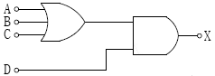
- X=(AㆍBㆍC)ㆍD
- X=(A+B+C)ㆍD
- X=(AㆍBㆍC)+D
- X=A+B+C+D
(정답률: 79%)
28. 20Ω과 40Ω의 병렬회로에서 20Ω에 흐르는 전류가 10A라면, 이 회로에 흐르는 총 전류는 몇 A인가?
- 5
- 10
- 15
- 20
(정답률: 63%)
29. 3상 유도전동기가 중부하로 운전되던 중 1선이 절단되면 어떻게 되는가?
- 전류가 감소한 상태에서 회전이 계속된다.
- 전류가 증가한 상태에서 회전이 계속된다.
- 속도가 증가하고 부하전류가 급상승한다.
- 속도가 감소하고 부하전류가 급상승한다.
(정답률: 64%)
30. SCR의 양극 전류가 10A일 때 게이트 전류를 반으로 줄이면 양극 전류는 몇 A인가?
- 20
- 10
- 5
- 0.1
(정답률: 78%)
31. 비례+적분+미분동작(PID동작)식을 바르게 나타낸 것은?
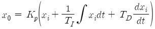
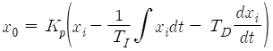
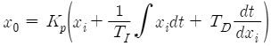
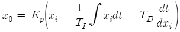
(정답률: 59%)
32. 그림과 같은 회로에서 분류기의 배율은? (단, 전류계 A의 내부저항은 RA이며 RS는 분류기 저항이다.)
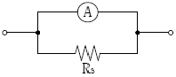
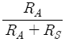
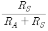
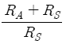
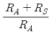
(정답률: 52%)
33. 어떤 옥내배선에 380V의 전압을 가하였더니 0.2㎃의 누설전류가 흘렀다. 이 배선의 절연저항은 몇 ㏁인가?
- 0.2
- 1.9
- 3.8
- 7.6
(정답률: 74%)
34. 변류기에 결선된 전류계가 고장이 나서 교체하는 경우 옳은 방법은?
- 변류기의 2차를 개방시키고 전류계를 교체한다.
- 변류기의 2차를 단락시키고 전류계를 교체한다.
- 변류기의 2차를 접지시키고 전류계를 교체한다.
- 변류기에 피뢰기를 연결하고 전류계를 교체한다.
(정답률: 80%)
35. 두 콘덴서 C1, C2를 병렬로 접속하고 전압을 인가하였더니 전체 전하량이 Q[C]이었다. C2에 충전된 전하량은?
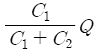
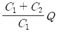
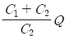
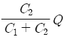
(정답률: 60%)
36. 논리식
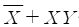
를 간략화 한 것은?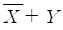
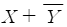
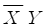
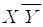
(정답률: 68%)
37. 전기화재의 원인이 되는 누전전류를 검출하기 위해 사용되는 것은?
- 접지계전기
- 영상변류기
- 계기용변압기
- 과전류계전기
(정답률: 76%)
38. 공기 중에 2m의 거리에 10μC, 20μC의 두 점전하가 존재할 때 이 두 전하 사이에 작용하는 정전력은 약 몇 N인가?
- 0.45
- 0.9
- 1.8
- 3.6
(정답률: 53%)
39. 100V, 1㎾의 니크롬선을 3/4의 길이로 잘라서 사용할 때 소비전력은 약 몇 W인가?
- 1,000
- 1,333
- 1,430
- 2,000
(정답률: 71%)
40. 줄의 법칙에 관한 수식으로 틀린 것은?
- H=I2Rt[J]
- H=0.24I2 Rt [cal]
- H=0.12 VIt [J]
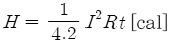
(정답률: 65%)
3과목: 소방관계법규
41. 아파트로 층수가 20층인 특정소방대상물에서 스프링클러설비를 하여야 하는 층수는? (단, 아파트는 신축을 실시하는 경우이다.)
- 전층
- 15층 이상
- 11층 이상
- 6층 이상
(정답률: 75%)
42. 1급 소방안전관리대상물이 아닌 것은?
- 15층인 특정소방대상물(아파트는 제외)
- 가연성가스를 2,000톤 저장ㆍ취급하는 시설
- 21층인 아파트로서 300세대인 것
- 연면적 20,000m2인 문화집회 및 운동시설
(정답률: 66%)
43. 다음 중 중급기술자의 학력ㆍ경력자에 대한 기준으로 옳은 것은? (단, 학력ㆍ경력자란고등학교ㆍ대학 또는 이와 같은 수준 이상의 교육기관의 소방관련학과의 정해진 교육 과정을 이수하고 졸업하거나 그 밖의 관계 법령에 따라 국내 또는 외국에서 이와 같은 수준 이상의 학력이 있다고 인정되는 사람을 말한다.)
- 고등학교를 졸업 후 10년 이상 소방 관련 업무를 수행한 자
- 학사업무를 취득한 후 6년 이상 소방 관련 업무를 수행한 자
- 석사학위를 취득한 후 2년 이상 소방 관련 업무를 수행한 자
- 박사학위를 취득한 후 1년 이상 소방 관련 업무를 수행한 자
(정답률: 63%)
44. 소방특별조사 결과에 따른 조치명령으로 손실을 입어 손실을 보상하는 경우 그 손실을 입은 자는 누구와 손실보상을 협의하여야 하는가?
- 소방서장
- 시ㆍ도지사
- 소방본부장
- 행정안전부장관
(정답률: 78%)
45. 소방기본법령상 특수가연물의 저장 및 취급 기준 중 석탄ㆍ목탄류를 발전용으로 저장하는 경우 쌓는 부분의 바닥면적은 몇 m2 이하인가? (단, 살수설비를 설치하거나 방사능력 범위에 해당 특수가연물이 포함되도록 대형수동식소화기를 설치하는 경우이다.) (문제 오류로 실제 시험에서는 모두 정답처리 되었습니다. 여기서는 3번을 누르면 정답 처리 됩니다.)
- 200
- 250
- 300
- 350
(정답률: 77%)
46. 소방기본법상 명령권자가 소방본부장, 소방서장 또는 소방대장에게 있는 사항은?
- 소방 활동을 할 때에 긴급한 경우에는 이웃한 소방본부장 또는 소방서장에게 소방 업무의 응원을 요청할 수 있다.
- 화재, 재난ㆍ재해, 그 밖의 위급한 상황이 발생한 현장에서 소방활동을 위하여 필요할 때에는 그 관할구역에 사는 사람 또는 그 현장에 있는 사람으로 하여금 사람을 구출하는 일 또는 불을 끄거나 불이 번지지 아니하도록 하는 일을 하게 할 수 있다.
- 수사기관이 방화 또는 실화의 혐의가 있어서 이미 피의자를 체포하였거나 증거 물을 압수하였을 때에 화재조사를 위하여 필요한 경우에는 수사에 지장을 주지 아니하는 범위에서 그 피의자 또는 압수된 증거물에 대한 조사를 할 수 있다.
- 화재, 재난ㆍ재해, 그 밖의 위급한 상황이 발생하였을 때에는 소방대를 현장에 신속하게 출동시켜 화재진압과 인명구조, 구급 등 소방에 필요한 활동을 하게하여야 한다.
(정답률: 59%)
47. 경유의 저장량이 2,000리터, 중유의 저장량이 4,000리터, 등유의 저장량이 2,000리터인 저장소에 있어서 지정수량의 배수는?
- 동일
- 6배
- 3배
- 2배
(정답률: 56%)
48. 소방용수시설 중 소화전과 급수탑의 설치기준으로 틀린 것은?
- 급수탑 급수배관의 구경은 100mm 이상으로 할 것
- 소화전은 상수도와 연결하여 지하식 또는 지상식의 구조로 할 것
- 소방용호스와 연결하는 소화전의 연결금속구의 구경은 65mm로 할 것
- 급수탑의 개폐밸브는 지상에서 1.5m 이상 1.8m 이하의 위치에 설치할 것
(정답률: 73%)
49. 특정소방대상물의 관계인이 소방안전관리자를 해임한 경우 재선임 신고를 해야 하는 기준은? (단, 해임한 날부터를 기준일로 한다.) (문제 오류로 실제 시험에서는 모두 정답처리 되었습니다. 여기서는 3번을 누르면 정답 처리 됩니다.)
- 10일 이내
- 20일 이내
- 30일 이내
- 40일 이내
(정답률: 80%)
50. 화재예방, 소방시설 설치ㆍ유지 및 안전관리에 관한 법령상 소방안전관리대상물의 소방안전관리자 업무가 아닌 것은? (문제 오류로 실제 시험에서는 모두 정답처리 되었습니다. 여기서는 1번을 누르면 정답 처리 됩니다.)
- 소방훈련 및 교육
- 피난시설, 방화구획 및 방화시설의 유지ㆍ관리
- 자위소방대 및 초기대응체계의 구성ㆍ운영ㆍ교육
- 피난계획에 관한 사항과 대통령령으로 정하는 사항이 포함된 소방계획서의 작성 및 시행
(정답률: 79%)
51. 문화재보호법의 규정에 의한 유형문화재와 지정문화재에 있어서는 제조소 등과의 수평거리를 몇 m 이상 유지하여야 하는가?
- 20
- 30
- 50
- 70
(정답률: 76%)
52. 화재예방, 소방시설 설치ㆍ유지 및 안전관리에 관한 법령상 소방시설 등에 대한 자체 점검을 하지 아니하거나 관리업자 등으로 하여금 정기적으로 점검하게 하지 아니한자에 대한 벌칙 기준으로 옳은 것은?
- 1년 이하의 징역 또는 1,000만 원 이하의 벌금
- 3년 이하의 징역 또는 1,500만 원 이하의 벌금
- 3년 이하의 징역 또는 3,000만 원 이하의 벌금
- 6개월 이하의 징역 또는 1,000만 원 이하의 벌금
(정답률: 66%)
53. 소방기본법령상 소방본부 종합상황실 실장이 소방청의 종합상황실에 서면ㆍ모사전송 또는 컴퓨터통신 등으로 보고하여야 하는 화재의 기준에 해당하지 않는 것은?
- 항구에 매어둔 총 톤수가 1,000톤 이상인 선박에서 발생한 화재
- 연면적 15,000m2 이상인 공장 또는 화재경계지구에서 발생한 화재
- 지정수량의 1,000배 이상의 위험물의 제조소ㆍ저장소ㆍ취급소에서 발생한 화재
- 층수가 5층 이상이거나 병상이 30개 이상인 종합병원ㆍ정신병원ㆍ한방병원ㆍ요양소에서 발생한 화재
(정답률: 56%)
54. 소방시설공사업법령상 상주공사감리 대상기준 중 다음 ㉠, ㉡, ㉢에 알맞은 것은?
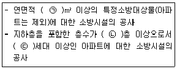
- ㉠ 10,000, ㉡ 11, ㉢ 600
- ㉠ 10,000, ㉡ 16, ㉢ 500
- ㉠ 30,000, ㉡ 11, ㉢ 600
- ㉠ 30,000, ㉡ 16, ㉢ 500
(정답률: 66%)
55. 화재예방, 소방시설 설치ㆍ유지 및 안전관리에 관한 법령상 소방특별조사위원회의 위원에 해당하지 아니하는 사람은?
- 소방기술사
- 소방시설관리사
- 소방 관련 분야의 석사학위 이상을 취득한 사람
- 소방 관련 법인 또는 단체에서 소방 관련업무에 3년 이상 종사한 사람
(정답률: 75%)
56. 제3류 위험물 중 금수성 물품에 적응성이 있는 소화약제는?
- 물
- 강화액
- 팽창질석
- 인산염류분말
(정답률: 82%)
57. 화재가 발생하는 경우 인명 또는 재산의 피해가 클 것으로 예상되는 때 소방대상물의 개수ㆍ이전ㆍ제거, 사용금지 등의 필요한 조치를 명할 수 있는 자는?
- 시ㆍ도지사
- 의용소방대장
- 기초자치단체장
- 소방본부장 또는 소방서장
(정답률: 72%)
58. 소방기본법령상 소방본부장 또는 소방서장은 소방상 필요한 훈련 및 교육을 실시하고자 하는 때에는 화재경계지구 안의 관계인에게 훈련 또는 교육 며칠 전까지 그 사실을 통보하여야 하는가?
- 5
- 7
- 10
- 14
(정답률: 60%)
59. 소방기본법상 보일러, 난로, 건조설비, 가스ㆍ전기시설, 그 밖에 화재 발생 우려가 있는 설비 또는 기구 등의 위치ㆍ구조 및 관리와 화재 예방을 위하여 불을 사용할 때 지켜야 하는 사항은 무엇으로 정하는가?
- 총리령
- 대통령령
- 시ㆍ도 조례
- 행정안전부령
(정답률: 68%)
60. 위험물운송자 자격을 취득하지 아니한 자가 위험물 이송탱크저장소 운전 시의 벌칙으로 옳은 것은?
- 100만 원 이하의 벌금
- 300만 원 이하의 벌금
- 500만 원 이하의 벌금
- 1,000만 원 이하의 벌금
(정답률: 52%)
4과목: 소방전기시설의 구조 및 원리
61. 경계전로의 누설전류를 자동적으로 검출하여 이를 누전경보기의 수신부에 송신하는 것을 무엇이라고 하는가?
- 수신부
- 확성기
- 변류기
- 증폭기
(정답률: 71%)
62. 누전경보기의 5~10회로까지 사용할 수 있는 집합형 수신기 내부결선도에서 구성요소가 아닌 것은?
- 제어부
- 증폭부
- 조작부
- 자동입력 절환부
(정답률: 46%)
63. 비상콘센트설비의 화재안전기준에서 정하고 있는 저압의 정의는?
- 직류는 750V 이하, 교류는 600V 이하인 것
- 직류는 750V 이하, 교류는 380V 이하인 것
- 직류는 750V를, 교류는 600V를 넘고 7,000V 이하인 것
- 직류는 750V를, 교류는 380V를 넘고 7,000V 이하인 것
(정답률: 83%)
64. 비상방송설비의 음향장치는 정격전압의 몇 % 전압에서 음향을 발할 수 있는 것으로 하여야 하는가?
- 80
- 90
- 100
- 110
(정답률: 84%)
65. 자가발전설비, 비상전원수전설비 또는 전기저장장치(외부 전기에너지를 저장해 두었다가 필요한 때 전기를 공급하는 장치)를 비상콘센트설비의 비상전원으로 설치하여야하는 특정소방대상물로 옳은 것은?
- 지하층을 제외한 층수가 4층 이상으로서 연면적 600m2 이상인 특정소방대상물
- 지하층을 제외한 층수가 5층 이상으로서 연면적 1,000m2 이상인 특정소방대상물
- 지하층을 제외한 층수가 6층 이상으로서 연면적 1,500m2 이상인 특정소방대상물
- 지하층을 제외한 층수가 7층 이상으로서 연면적 2,000m2 이상인 특정소방대상물
(정답률: 44%)
66. 불꽃감지기의 설치기준으로 틀린 것은?
- 수분이 많이 발생할 우려가 있는 장소에는 방수형으로 설치할 것
- 감지기를 천장에 설치하는 경우에는 감지기는 천장을 향하여 설치할 것
- 감지기는 화재감지를 유효하게 감지할 수있는 모서리 또는 벽 등에 설치할 것
- 감지기는 공칭감시거리와 공칭시야각을 기준으로 감시구역이 모두 포용될 수 있도록 설치할 것
(정답률: 79%)
67. 무선통신보조설비의 무선기기 접속단자 중 지상에 설치하는 접속단자는 보행거리 최대 몇 m 이내마다 설치하여야 하는가?
- 5
- 50
- 150
- 300
(정답률: 61%)
68. 정온식 감지선형 감지기에 관한 설명으로 옳은 것은?
- 일국소의 주위온도 변화에 따라서 차동 및 정온식의 성능을 갖는 것을 말한다.
- 일국소의 주위온도가 일정한 온도 이상이 되었을 때 작동하는 것으로서 외관이 전선으로 되어 있는 것을 말한다.
- 그 주위온도가 일정한 온도상승률 이상이 되었을 때 작동하는 것을 말한다.
- 그 주위온도가 일정한 온도상승률 이상이 되었을 때 작동하는 것으로서 광범위한 열효과의 누적에 의하여 동작하는 것을 말한다.
(정답률: 71%)
69. 축전지의 자기방전을 보충함과 동시에 상용 부하에 대한 전력공급은 충전기가 부담하도록 하되 충전기가 부담하기 어려운 일시적인 대전류는 부하는 축전지로 하여금 부담하게 하는 충전방식은?
- 과충전방식
- 균등충전방식
- 부동충전방식
- 세류충전방식
(정답률: 74%)
70. 단독경보형 감지기 중 연동식감지기의 무선 기능에 대한 설명으로 옳은 것은?
- 화재신호를 수신한 단독경보형 감지기는 60초 이내에 경보를 발해야 한다.
- 무선통신 점검은 단독경보형 감지기가 서로 송수신하는 방식으로 한다.
- 작동한 단독경보형 감지기는 화재경보가 정지하기 전까지 100초 이내 주기마다 화재신호를 발신해야 한다.
- 무선통신 점검은 168시간 이내에 자동으로 실시하고 이때 통신이상이 발생하는 경우에는 300초 이내에 통신이상 상태의 단독경보형 감지기를 확인할 수 있도록 표시 및 경보를 해야 한다.
(정답률: 59%)
71. 정온식감지기의 설치 시 공칭작동온도가 최고주위온도보다 최소 몇 ℃ 이상 높은 것으로 설치하여야 하나?
- 10
- 20
- 30
- 40
(정답률: 79%)
72. 무선통신보조설비의 누설동축케이블의 설치기준으로 틀린 것은?
- 끝부분에는 반사 종단저항을 견고하게 설치할 것
- 고압의 전로로부터 1.5m 이상 떨어진 위치에 설치할 것
- 금속판 등에 따라 전파의 복사 또는 특성이 현저하게 저하되지 아니하는 위치에 설치할 것
- 불연 또는 난연성의 것으로서 습기에 따라 전기의 특성이 변질되지 아니하는 것으로 설치할 것
(정답률: 63%)
73. 소화활동 시 안내방송에 사용하는 증폭기의 종류로 옳은 것은?
- 탁상형
- 휴대형
- Desk형
- Rack형
(정답률: 63%)
74. 계단통로유도등은 각 층의 경사로 참 또는 계단참마다 설치하도록 하고 있는데 1개 층에 경사로 참 또는 계단참이 2 이상 있는 경우에는 몇 개의 계단참마다 계단통로유도 등을 설치하여야 하는가?
- 2개
- 3개
- 4개
- 5개
(정답률: 72%)
75. 자동화재탐지설비의 수신기의 각 회로별 종단에 설치되는 감지기에 접속되는 배선의 전압은 감지기 정격전압의 최소 몇 % 이상이어야 하는가?
- 50
- 60
- 70
- 80
(정답률: 84%)
76. 비상벨설비 또는 자동식 사이렌설비에는 그 설비에 대한 감시상태를 몇 시간 지속한 후 유효하게 10분 이상 경보할 수 있는 축전지 설비(수신기에 내장하는 경우를 포함한다)를 설치하여야 하는가?
- 1시간
- 2시간
- 4시간
- 6시간
(정답률: 81%)
77. 자동화재속보설비의 설치기준으로 틀린 것은?
- 조작스위치는 바닥으로부터 1m 이상 1.5m 이하의 높이에 설치할 것
- 속보기는 소방관서에 통신망으로 통보하도록 하며, 데이터 또는 코드전송방식을 부가적으로 설치할 수 있다.
- 자동화재탐지설비와 연동으로 작동하여 자동적으로 화재발생 상황을 소방관서에 전달되는 것으로 할 것
- 속보기는 소방청장이 정하여 고시한「자동화재속보설비의 속보기의 성능인증 및 제품검사의 기술기준」에 적합한 것으로 설치하여야 한다.
(정답률: 71%)
78. 휴대용비상조명등 설치 높이는?
- 0.8m ~ 1.0m
- 0.8m ~ 1.5m
- 1.0m ~ 1.5m
- 1.0m ~ 1.8m
(정답률: 82%)
79. 자동화재탐지설비의 화재안전기준에서 사용하는 용어가 아닌 것은?
- 중계기
- 경계구역
- 시각경보장치
- 단독경보형 감지기
(정답률: 49%)
80. 비상경보설비를 설치하여야 할 특정소방대상물로 옳은 것은? (단, 지하구, 모래ㆍ석재 등 불연재료 창고 및 위험물 저장ㆍ처리 시설 중 가스시설은 제외한다.)
- 지하가 중 터널로서 길이가 400m 이상인 것
- 30명 이상의 근로자가 작업하는 옥내작업장
- 지하층 또는 무창층의 바닥면적이 150m2(공연장의 경우 100m2) 이상인 것
- 연면적 300m2(지하가 중 터널 또는 사람이 거주하지 않거나 벽이 없는 축사 등 동ㆍ식물 관련시설은 제외) 이상인 것
(정답률: 72%)